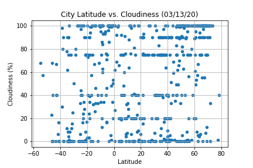

Cloudiness

As expected, the weather becomes significantly warmer as one approaches the equator (0 Deg Latitude). More interstingly; however, is the fact that the souther hemisphere tends to be warmer this time of year than the northern hemisphere. This may be due to the title of the earth at the time of year this data was gathered.